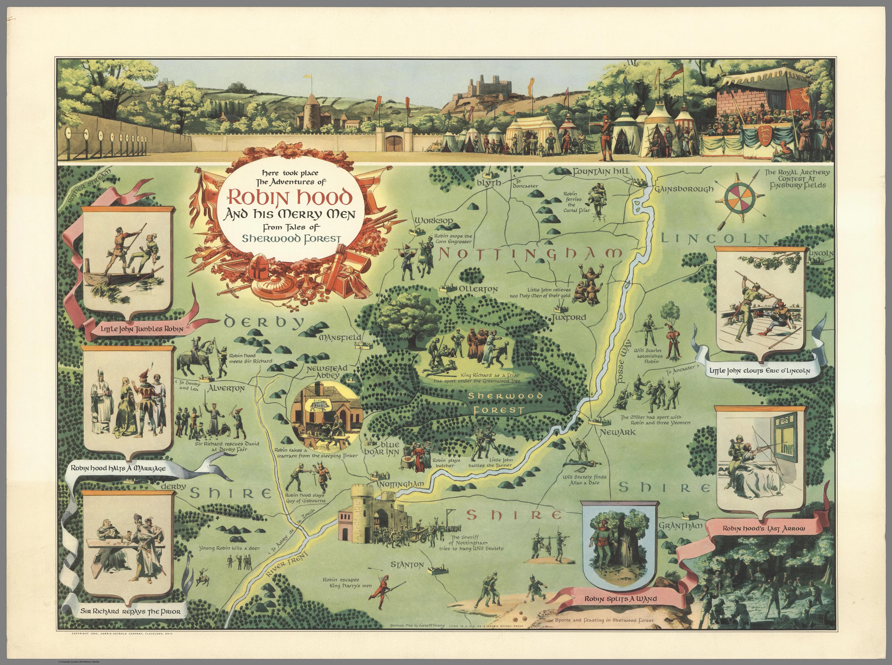
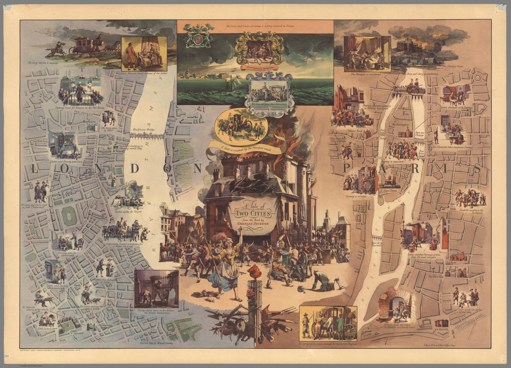
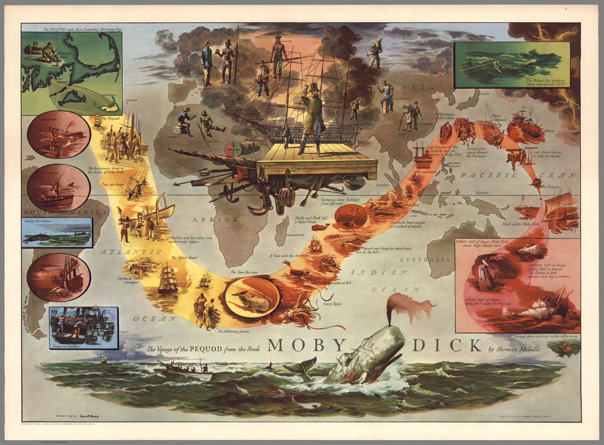
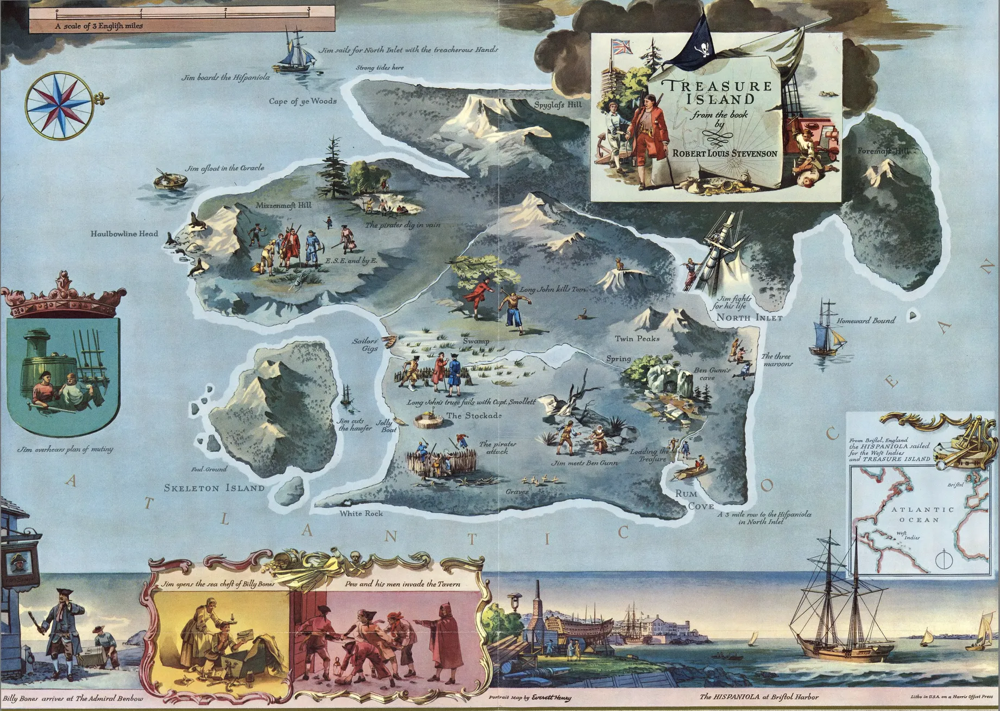
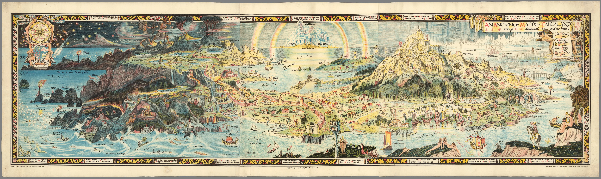
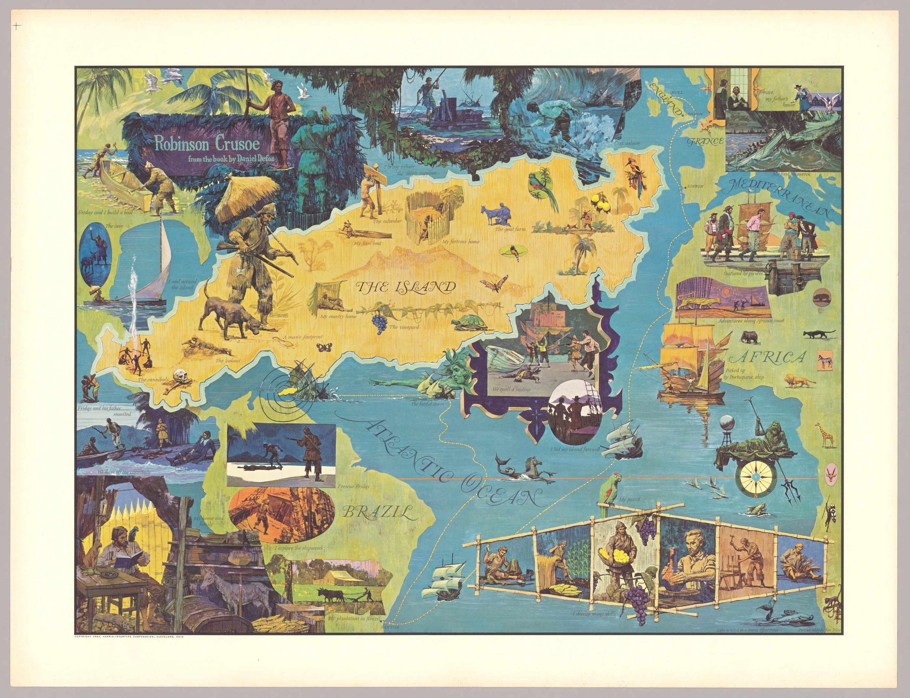
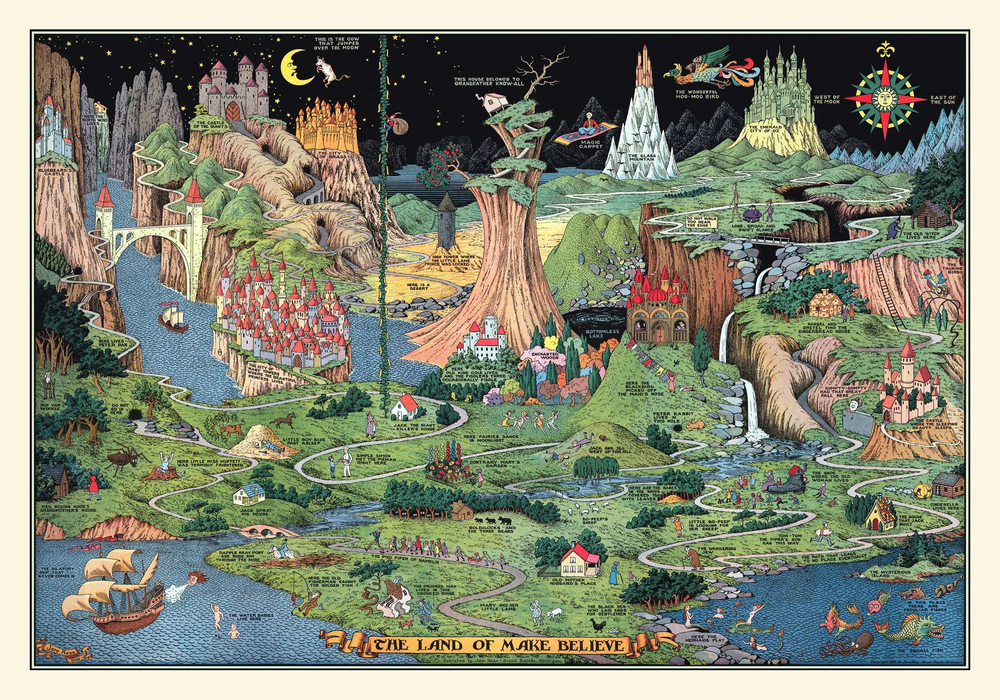

Some wonderful though fictional maps that lets your imagination wander.
×

❮
❯
Some wonderful though fictional maps that lets your imagination wander.

"Here took place the adventures of Robin Hood and his merry men" by Henry Edward Everett (1955)

"A Tale of two cities : from the book by Charles Dickens" by Henry Edward Everett (1957)

"The Voyage of the Pequod from the Book Moby Dick by Herman Melville" by Henry Edward Everett (1956)

"Treasure Island from the book by Robert Louis Stevenson" by Henry Edward Everett (1981)

"An Ancient Mappe of Fairyland" by Bernard Sleigh (1918)

"Robinson Crusoe from the book by Daniel Defoe" by Ken Riley (1964)

"The Land of Make Believe" by Jaro Hess (1930)